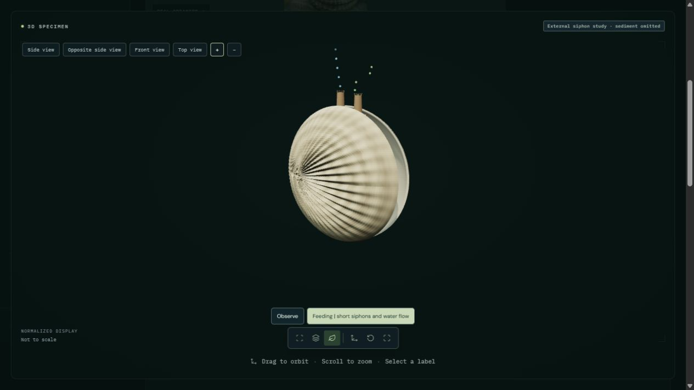

Open common cockle | Jaguar rest study
Short separate posterior siphons extend while the two valves open slightly. Enlarged green markers approach the inhalant opening; blue markers indicate outgoing water, not rejected food. The shell is shown upright with sediment omitted for inspection. In nature the cockle is usually buried with siphon tips at the sediment surface. The finite display does not imply that real filtration stops at twelve seconds.
External valve and short-siphon movement with illustrative water tracers is implemented. Ciliary pumping, measured flow fields, gill capture, particle selection, ingestion and digestion are not simulated. Sediment is omitted for inspection. Siphonal papillae are schematic; shell proportions, skin and optical response remain authored and not independently validated.

Troost et al. (2009): Feeding currents of oysters, mussels and common cockles. Inhalant flow measured in still-water experiments; exhalant direction observed, jet speeds modeled. Figure 2 guides posterior-up orientation. Does not validate this geometry, timing, flow speeds or internal feeding.
Unlike the long common siphonal sheath of Mya, this cockle study has two short separate openings of comparable diameter. No flow-rate values are inferred from the animation. Outbound blue markers represent water direction; they do not show food leaving the animal. Source shell geometry, normals, UVs and materials return unchanged outside the study.
46 animal processes remain fully unavailable. Partial studies retain their stated limitations.